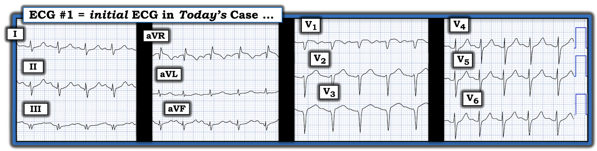
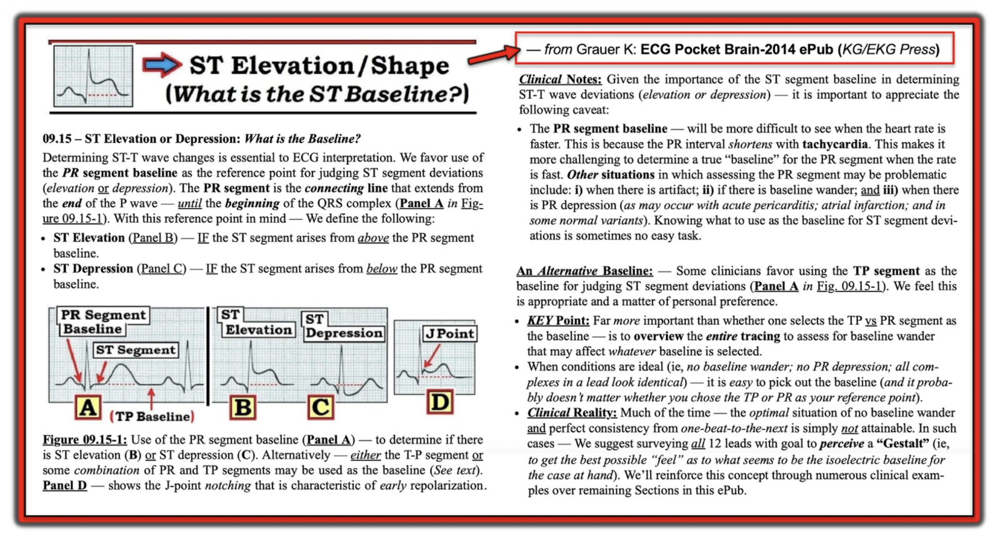
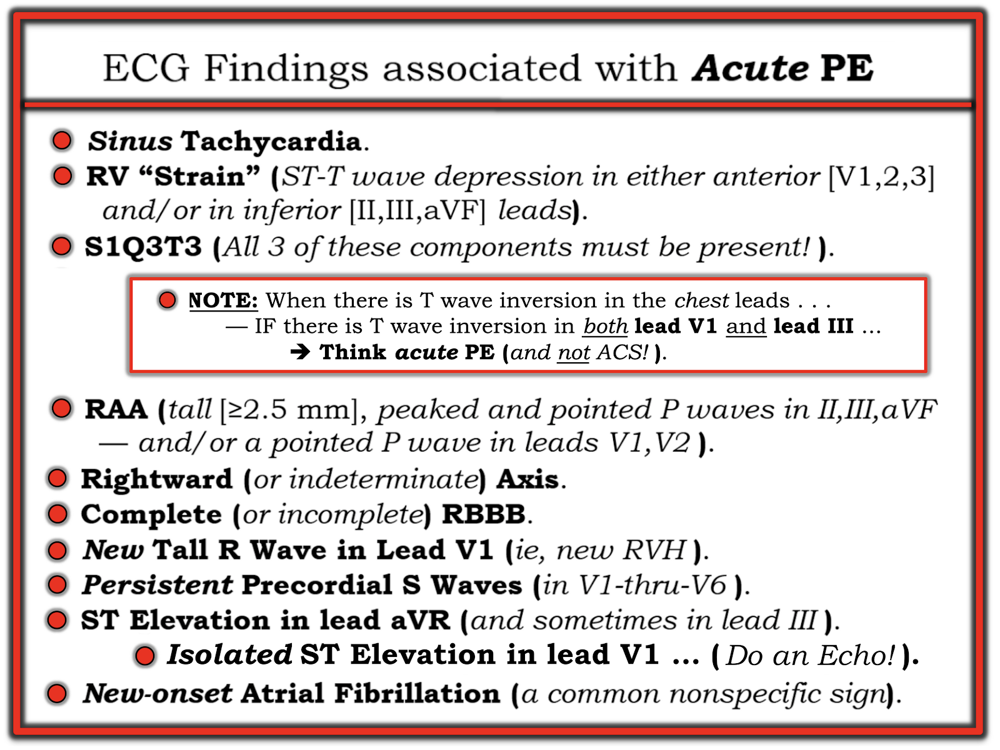
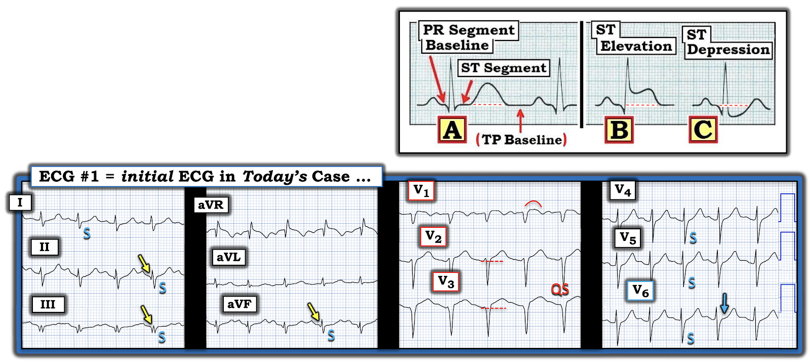

ECG Blog #532 — Một chẩn đoán bất ngờ ...
======================================
Xin LƯU Ý:
- Sau hôm nay — Sẽ không có bài ECG Blog mới nào trong ~4 tuần ...
- — Tôi cũng sẽ không trả lời email kịp thời ...
======================================
Toàn bộ tài liệu trên trang ECG Blog này vẫn được mở!
- Thẻ INDEX (ở góc trên bên phải mỗi trang) — có Mục lục liên kết, sắp xếp theo chủ đề. Vì vậy NẾU bạn đang tìm tài liệu về điện tâm đồ — Trang web này có rất nhiều!
- Và — NẾU bạn nhìn lên ĐẦU của mọi trang trong blog này — Bạn sẽ thấy một Menu các Thẻ liên kết tới nhiều mục của blog, gồm các podcast điện tâm đồ, Audio & Video của tôi, hơn 100 giản đồ bậc thang (laddergram) có giải thích, và 900+ Bình luận mà tôi đã đóng góp trên ECG Blog của Dr. Smith. ==> RẤT NHIỀU thứ để xem lại "khi bạn rảnh".

==============================
ECG Blog #532 — Một chẩn đoán bất ngờ ...
==============================
Điện tâm đồ ở Hình 1 được ghi ở một người đàn ông trung niên — đến khoa cấp cứu (ED — Emergency Department) với bệnh sử 1 tuần đau ngực từng cơn kiểu "nóng rát" — kèm một chút "khó thở".
CÂU HỎI:
- BẠN sẽ đọc điện tâm đồ ở Hình 1 như thế nào?
- Có nên kích hoạt phòng thông tim (cath lab) không?
- — Có nên làm gì khác tại giường không?


SUY NGHĨ CỦA TÔI:
Điện tâm đồ ở Hình 1 được gửi cho tôi kèm bệnh sử nêu trên. Tôi đã trả lời rằng nhận định ban đầu của tôi về bản ghi này như sau:
- Đây là một điện tâm đồ rất đáng lo ngại!
- Có nhịp nhanh xoang — bản thân điều này đã là một dấu hiệu đáng lo, vì nhịp nhanh xoang thường là dấu hiệu ít gặp trong nhồi máu cơ tim cấp — trừ khi có "điều gì khác" đang diễn ra (tức là suy tim, sốc, v.v.).
- Có sóng Q ở các chuyển đạo dưới với dạng "qRS" — mà ở các chuyển đạo dưới thường có nghĩa là đã có nhồi máu cơ tim thành dưới vào một thời điểm nào đó.
- Ít nhất — có DSI (thiếu máu cục bộ dưới nội tâm mạc lan tỏa — Diffuse Subendocardial Ischemia) — thể hiện qua ST chênh lên ở chuyển đạo aVR, kèm ST chênh xuống ở 5 chuyển đạo chi còn lại (cũng như ở các chuyển đạo trước tim bên).
- Tôi nghi có hình ảnh xoáy trước tim (Precordial "Swirl") — với ST chênh lên và sóng T đảo ngược bất thường rõ ở chuyển đạo V1 — cùng đoạn ST thẳng đuỗn kèm ST chênh lên ở các chuyển đạo V2,V3 — và có vẻ như có điểm J chênh xuống ở chuyển đạo V6 (Hình ảnh "Swirl" thường gặp khi có tắc đoạn gần LAD cấp hoặc mới xảy ra gần đây — và sự mất sóng R từ V2 sang V3 gợi ý nhồi máu thành trước).
Câu hỏi khó là điều gì "mới" so với "cũ" — và, nếu là "mới" (như tôi nghi ngờ) — thì "mới" đến mức nào khi bệnh sử là đau ngực (CP) từng cơn trong 1 tuần?
- Tôi đã hỏi như sau: i) Bệnh nhân này có tiền sử bệnh tim trước đây không? — và, ii) Có điện tâm đồ cũ nào không?
- Tôi đề nghị rằng, "Bệnh nhân cần được thông tim sớm" — vì tôi nghi động mạch "thủ phạm" là LAD.
CÂU HỎI:
- NHƯNG — Tôi đã không đề cập đến điều gì trong các nhận xét trên?
==================================
DIỄN TIẾN CỦA CA BỆNH:
- Bệnh nhân được nhập khoa Hồi sức tích cực với chẩn đoán hội chứng vành cấp ACS (Acute Coronary Syndrome).
- Trong khi cân nhắc hướng xử trí tốt nhất — siêu âm tim tại giường đã được thực hiện. Thật bất ngờ — siêu âm tim tại giường cho thấy giãn thất phải (RV) rõ rệt với vách liên thất hình chữ "D".
- CTPA — chụp CT mạch phổi (CT Scan Pulmonary Angioram) sau đó được thực hiện — xác nhận chẩn đoán thuyên tắc phổi cấp diện rộng — PE (Pulmnary Embolism).
- Bệnh nhân được điều trị bằng tiêm heparin trọng lượng phân tử thấp (Enoxaparin) — và cải thiện nhanh chóng.
ĐIỂM THEN CHỐT (PEARL) #1: Siêu âm tim tại giường là một công cụ chẩn đoán không xâm lấn, hữu ích đến kinh ngạc trong y học cấp cứu — mà khi được đào tạo, có thể thực hiện trong vòng vài phút (và nếu không có nó — chẩn đoán đúng trong ca bệnh vốn khó hiểu này đã bị chậm trễ hàng giờ!).
- Siêu âm tim tại giường có thể cực kỳ hữu ích để xác nhận nhồi máu cơ tim cấp khi điện tâm đồ không rõ ràng — NẾU — siêu âm tim cho thấy rối loạn vận động thành khu trú.
- Điều cần lưu ý là nếu bệnh nhân không còn CP (đau ngực — Chest Pain) vào lúc làm siêu âm tim — thì không loại trừ được điều gì nếu siêu âm tim bình thường. Nhưng nếu CP vẫn còn và siêu âm tim cho thấy chức năng thất trái hoàn toàn bình thường — điều này khiến khả năng nhồi máu cơ tim cấp thấp hơn nhiều.
- Siêu âm tim tại giường có thể gợi ý bệnh cơ tim Takotsubo nếu có "mỏm tim phình dạng bóng" (apical ballooning) do mỏm tim vô động hoặc giảm động, trong khi các đoạn đáy còn bảo tồn hoặc tăng co bóp (Izumo và Akashi — Cardiovasc Diagn Ther 8(1):90-100, 2018).
ĐIỀU CỐT LÕI:
Siêu âm tim tại giường có thể hỗ trợ vô giá trong việc gợi ý mạnh mẽ PE cấp là nguyên nhân gây ra triệu chứng của bệnh nhân — và làm được điều đó chỉ trong vài phút!
- Trong ca hôm nay — siêu âm tim là manh mối MẤU CHỐT đã dẫn các bác sĩ tránh xa chẩn đoán ACS (hội chứng vành cấp — Acute Coronary Syndrome) — và đi tới manh mối đúng là PE cấp diện rộng! (Xem ECG Blog #443 — về một ca trong đó tôi xem lại các dấu hiệu trên siêu âm tim tại giường và CTPA ở một bệnh nhân bị PE cấp mức độ lớn).
==================================
Chúng ta đã bỏ sót điều gì?
Trong những ca như ca này — tôi thấy hữu ích khi "tự vấn" và NHÌN LẠI để cố gắng học hỏi từ bất kỳ manh mối lâm sàng nào có thể đã bị bỏ sót.
- "Có chút khó thở" đã được nhắc đến trong phần bệnh sử ngắn gọn mà chúng tôi nhận được. Thật khó biết triệu chứng khó thở có ý nghĩa đến mức nào trong ca hôm nay chỉ qua những dòng chữ trên trang giấy. Đôi khi — "Bạn phải có mặt ở đó mới biết!" ( = tại giường bệnh!).
- ĐIỂM THEN CHỐT (PEARL) #2: Theo kinh nghiệm của tôi — dấu hiệu sinh tồn bị bỏ qua nhiều nhất, vượt xa các dấu hiệu khác, là tần số thở! Phần lớn thời gian — bác sĩ tại giường đơn giản là không dành thời gian để ĐẾM tần số thở.
- Điều dưỡng cũng vậy (theo kinh nghiệm của tôi) không phải lúc nào cũng đếm tần số thở. Thay vào đó — đôi khi họ chỉ ghi 12 hoặc 15/phút nếu bệnh nhân "có vẻ ổn".
- Thực tế lâm sàng: Trừ khi bạn dành một khoảnh khắc có chủ ý để thực sự NHÌN bệnh nhân — thì quá dễ bỏ sót một bệnh nhân đang thở nông nhưng nhanh — trừ khi bạn thực sự ĐẾM số nhịp thở mỗi phút. Và nếu bệnh nhân thở 25-30/phút lúc nghỉ ==> đó là thở nhanh, điều này phải được xem là manh mối quan trọng cho thấy nguyên nhân có thể là một vấn đề cấp tính ở phổi!
Nhìn lại điện tâm đồ hôm nay ...
Ngoài bệnh sử CP (được mô tả là đau ngực kiểu "nóng rát" trong ca hôm nay) — ST chênh lên ở các chuyển đạo trước trên điện tâm đồ ban đầu (ở Hình 1) khiến tôi nghi ngờ một biến cố tim cấp là chẩn đoán chính.
- ĐIỂM THEN CHỐT (PEARL) #3: Thay vì ST chênh xuống hoặc sóng T đảo ngược ở các chuyển đạo trước của "tăng gánh" thất phải (RV strain) — đôi khi có thể thấy ST chênh lên ở các chuyển đạo trước trong PE cấp (Zhan và cs. — Ann Noninvasive Electrocardiol 19(6):543-551, 2014 — và — Omar HR — Eur Heart J: Acute Cardiovascu Care (5(8): 579-586, 2016).
- Các chuyển đạo bên phải như chuyển đạo III, aVR và V1 — hướng về vùng trước của thất phải. Nếu thất phải lớn — thì các chuyển đạo V2 và V3 cũng có thể hướng về vùng trước của thất phải — và — nếu có thiếu máu cục bộ xuyên thành nặng của thất phải (RV), bất kỳ chuyển đạo nào trong số này cũng có thể có ST chênh lên (như thấy ở chuyển đạo aVR và V1,V2,V3 trên điện tâm đồ ban đầu của ca hôm nay).
Điều tôi cũng thấy khó hiểu ở điện tâm đồ ban đầu của ca hôm nay — là câu hỏi liệu có (hay không có) ST chênh xuống ở nhiều chuyển đạo.
- Câu trả lời cho câu hỏi này phụ thuộc vào cách bạn xác định đường nền của đoạn ST — điều mà đôi khi không hề dễ.
- Để ôn lại — tôi đưa vào Hình 2 dưới đây cách tiếp cận của tôi để xác định đường nền đoạn ST trên bất kỳ bản ghi nào.


==================================
Với ĐIỂM THEN CHỐT #3 và Hình 2 trong đầu — tôi sẽ bổ sung Hình 3 dưới đây, là bảng tóm tắt của tôi về các dấu hiệu điện tâm đồ liên quan đến PE cấp — rồi tôi áp dụng lại cho điện tâm đồ ban đầu của ca hôm nay ở Hình 4.
==================================


==================================
Hình 4: Nhìn lại điện tâm đồ ban đầu của ca hôm nay ...


Điểm MẤU CHỐT: Với những thông tin trên — điện tâm đồ hôm nay (mà tôi đã đánh dấu ở Hình 4) — có thể phù hợp với chẩn đoán PE cấp, dù không có hình ảnh "tăng gánh" thất phải điển hình, trong đó sóng T đảo ngược ở các chuyển đạo trước và/hoặc dưới. Trong số các dấu hiệu điện tâm đồ ở Hình 4 có thể phù hợp với PE cấp có:
- Nhịp nhanh xoang (Ở đây với tần số ~115/phút).
- Sóng S ở nhiều chuyển đạo (tức là các chuyển đạo I,II,III; aVF; V4,5,6).
- ST chênh lên ở chuyển đạo aVR.
- "Tăng gánh" thất phải (RV strain) (Ở đây dưới dạng ST chênh xuống ở các chuyển đạo dưới — với giả định là dùng đường nền TP để đánh giá có ST chênh lên hay chênh xuống).
- ST chênh lên ở các chuyển đạo trước — mà như đã nêu ở ĐIỂM THEN CHỐT #3, có thể là một dấu hiệu của PE cấp.
- ST chênh xuống ở các chuyển đạo trước tim còn lại (V4,V5,V6) — một lần nữa với giả định là dùng đường nền TP để đánh giá có ST chênh xuống hay không.
ĐIỂM THEN CHỐT (PEARL) #4: Các dấu hiệu điện tâm đồ ở Hình 4 chống lại PE cấp là: i) sóng Q ở từng chuyển đạo dưới (mũi tên VÀNG ở các chuyển đạo II,III,aVF); — và, ii) mất sóng r từ chuyển đạo V2 sang V3, với sóng QS ở chuyển đạo V3.
- Ở bệnh nhân này, người đến viện với bệnh sử 1 tuần CP "nóng rát" và có chút "khó thở" — điện tâm đồ này buộc chúng ta phải phân biệt giữa tắc LAD cấp với PE cấp (cùng với khả năng bệnh cơ tim Takotsubo — do có bất thường sóng ST-T lan tỏa, và khoảng QT có vẻ kéo dài).
- Điểm MẤU CHỐT: Cho đến khi làm siêu âm tim tại giường trong ca hôm nay — tôi đã rất nghi ngờ chẩn đoán là tắc đoạn gần LAD cấp.
==================================
Thông điệp "cần nhớ":
Đôi khi — PE cấp có thể biểu hiện với hình ảnh "giả nhồi máu" (pseudo-infarction), như trong ca hôm nay.
- Siêu âm tim tại giường đã đưa ra chẩn đoán chỉ trong vài phút.
==================================
Lời cảm ơn: Xin cảm ơn Mohammed Elsisi (từ Cairo, Ai Cập) vì ca bệnh và các bản ghi này.
==================================
=======================
Các bài ECG Blog liên quan đến ca hôm nay:
- ECG Blog #443 và ECG Blog #496 — Xem lại các ca khó về chẩn đoán PE cấp trên điện tâm đồ.
- ECG Blog #313 và ECG Blog #435 — Xem thêm các ca về chẩn đoán PE cấp trên điện tâm đồ.
- ECG Blog #233 — Xem lại một ca PE cấp (có bàn luận về các tiêu chuẩn điện tâm đồ cho chẩn đoán này).
- ECG Blog #119 — Xem lại một ca PE cấp (và các tiêu chuẩn điện tâm đồ cho chẩn đoán này).
- Bình luận của tôi ở cuối trang của bài đăng ngày 17 tháng Sáu năm 2024 trên ECG Blog của Dr. Smith (về một ca tương tự ca ECG Blog hôm nay).
- ECG Blog #234 — Xem lại các tiêu chuẩn điện tâm đồ để chẩn đoán RVH và "tăng gánh" thất phải (RV strain).
- ECG Blog #77 — Một bài ôn tập khác về các tiêu chuẩn điện tâm đồ để chẩn đoán RVH và “tăng gánh” thất phải (RV strain).
- ECG Blog #380 — Xem lại khái niệm xoáy trước tim (Precordial "Swirl").
- ECG Blog #483 — Xem lại khái niệm DSI (thiếu máu cục bộ dưới nội tâm mạc lan tỏa — Diffuse Subendocardial Ischemia) ở Điểm then chốt #1 của bài này.